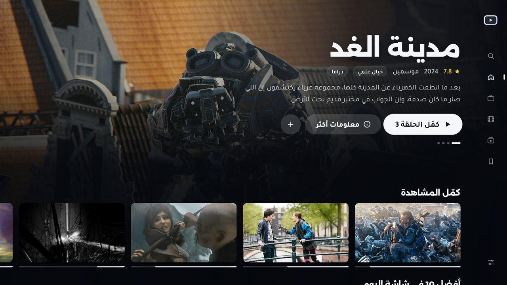
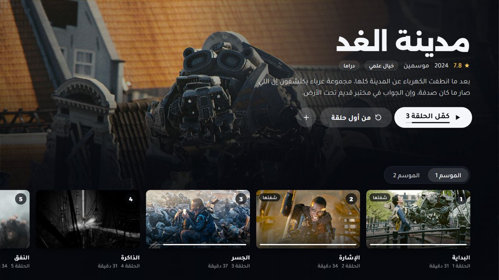
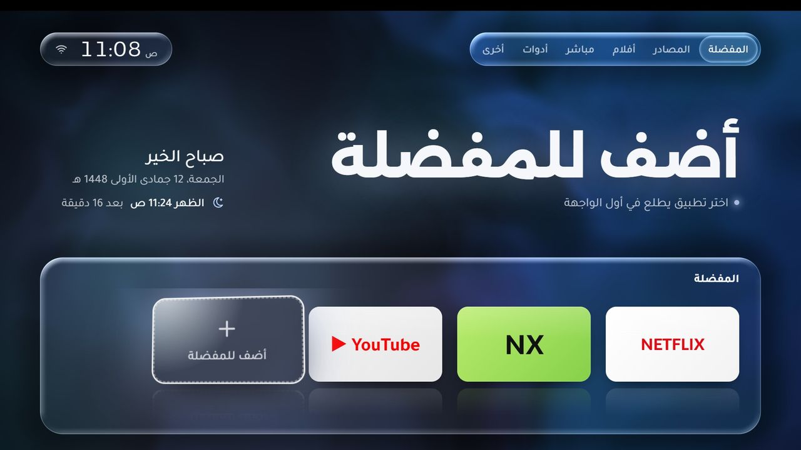
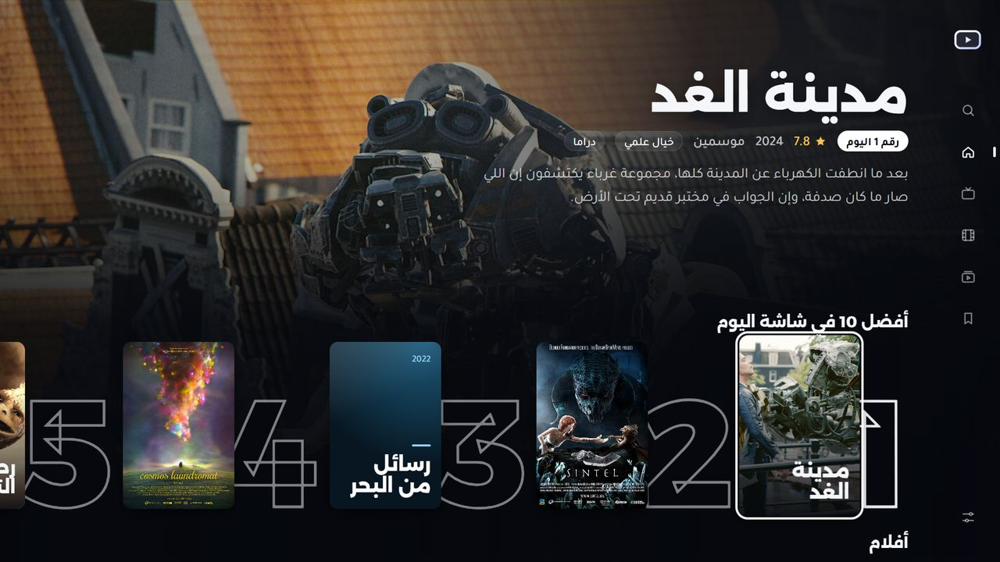
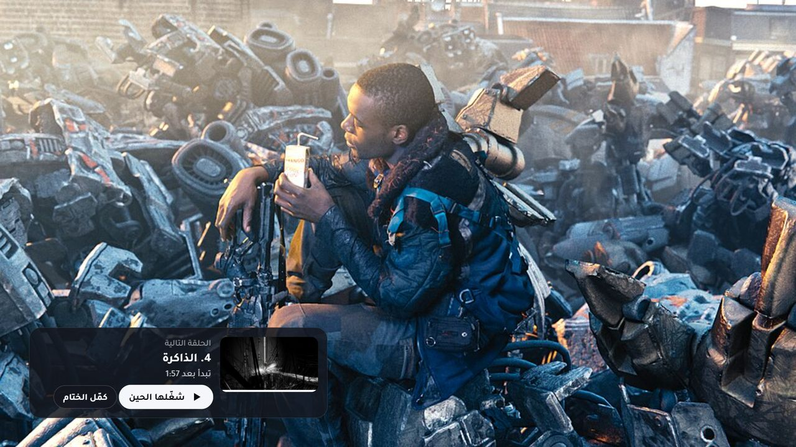

شاشة للكمبيوتر التطبيق الأساسي
لوحة تحكم لتلفزيونات أندرويد وجوجل تي في: تلقاها في شبكتك، وتثبّت عليها، وتعرض شاشتها، وتسرّعها. ملف واحد لويندوز وما يحتاج تثبيت.
حمّل Shasha.exeشاشة تطبيق للكمبيوتر يلقى تلفزيونات أندرويد في بيتك، ويثبّت عليها مشغّل IPTV بضغطة، ويعرض شاشتها عندك، ويسرّعها ويحسّن اتصالها.
تبي مشغّل IPTV على التلفزيون أو الجوال مباشرة؟ حمّل ملف APK

تفتح شاشة على كمبيوترك، وهو يتكفّل بالباقي على التلفزيون.
لوحة تحكم لتلفزيونات أندرويد وجوجل تي في: تلقاها في شبكتك، وتثبّت عليها، وتعرض شاشتها، وتسرّعها. ملف واحد لويندوز وما يحتاج تثبيت.
حمّل Shasha.exe
لاشتراكك في Xtream أو M3U: واجهة مثل نتفلكس فيها أفضل 10 والأفلام والمسلسلات، ويكمّل من وين وقفت، ويشغّل الحلقة التالية لحاله.
ثبّته من التطبيق
واجهة رئيسية زجاجية للتلفزيون بالعربي: الساعة والتاريخ الهجري ومواقيت الصلاة، وتطبيقاتك مرتبة في أقسام.
جرّب المعاينةكل اللي يحتاجه تلفزيونك، بدون ما تمسك الريموت وتدوّر في الإعدادات.
يدوّر في شبكة البيت ويعرف كل تلفزيون باسمه ونوعه، ويشرح لك كيف توصّله لو أول مرة.
مشغّل شاشة IPTV من آخر إصدار، ويقول لك لما ينزل تحديث. وأي تطبيق APK تسحبه عليه.
شاشة التلفزيون في نافذة على كمبيوترك، وتتحكم فيها بالماوس والكيبورد.
حركات النظام أسرع، ويوقف تطبيقات الإعلانات وعرض المحلات اللي تشتغل بالخلفية.
يفحص الواي فاي والإشارة، ويحط DNS أسرع ويتأكد إن النت شغّال بعدها.
ترتيب واجهتي ومفضلتك وصورك في نسخة على كمبيوترك، وترجّعها متى ما بغيت.
كل تغيير يسويه التطبيق في التلفزيون يتسجّل، وترجّعه مثل ما كان بزر.
مشغّل IPTV عربي مصمم للريموت. ما فيه قنوات جاهزة: تضيف بيانات اشتراكك أنت، وتبقى في جهازك.


أو ثبّت المشغّل بنفسك على التلفزيون أو الجوال من ملف APK.
Shasha.exe من فوق. لو طلع «Windows protected your PC» اضغط «More info» ثم «Run anyway».
فعّل «تصحيح الأخطاء» من خيارات المطوّر في التلفزيون (التطبيق يشرح لك)، وبعدها «ابحث عن شاشة».
من «التطبيقات» اضغط «ثبّته على التلفزيون». ولما ينزل إصدار جديد يطلع لك «حدّثه».
من متجر Google Play في التلفزيون، ابحث عن Downloader وثبّته.
افتحه واكتب هذا العنوان في خانة الرابط:
saadharazi.github.io/shasha/apkلما يخلص التحميل اختر «تثبيت». أول مرة بيطلب إذن تثبيت التطبيقات لـ Downloader: فعّله وارجع.
اضغط «حمّل ملف APK» فوق من جوالك.
من التنبيهات أو من مجلد التنزيلات.
لو طلب إذن تثبيت التطبيقات للمتصفح، فعّله وارجع، وبعدها اضغط «تثبيت».
التطبيق يكلّم تلفزيوناتك على شبكة البيت، وما يرسل بياناتها لأي مكان.
أي تغيير في التلفزيون له زر يرجّعه مثل ما كان.
لا في التطبيق ولا في المشغّل ولا في هذا الموقع.
كل الكود على GitHub برخصة MIT، تقدر تشوفه وتبنيه بنفسك.